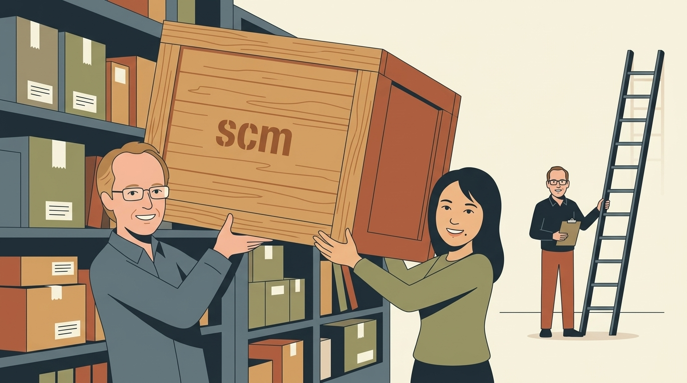
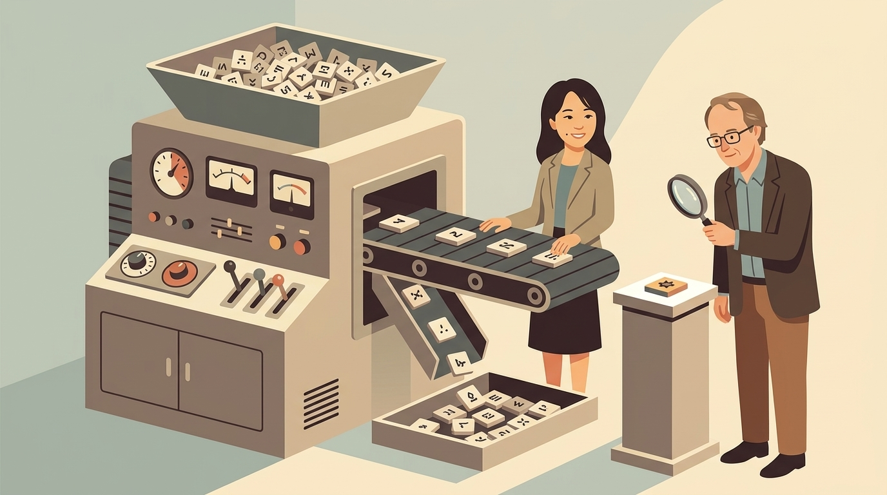

The familiar scm search, run directly on an nlmixr2 fit
On behalf of the nlmixr2 team


install.packages("nlmixr2scm")scm <- runSCM(
fit = fit_base,
data = pkdata,
varsVec = c("cl", "v"),
covarsVec = "wt",
catvarsVec = "sex",
shapes = c("power", "lin"),
pVal = list(fwd = 0.05,
bck = 0.01),
saveModels = FALSE
)fit_base: one-compartment warfarin PK model, fit with foceidata: needed, because the base model doesn’t use wt or sexpairsVec: test only the pairs you listincludedRelations: force known ones in, like allometric weight on clearance| Model | OFV | ΔOFV | AIC | BIC | Params | Covariates |
|---|---|---|---|---|---|---|
| Base | 475.1 | 0 | 950.4 | 975.1 | 7 | none |
| Forward final | 442.7 | −32.4 | 922.0 | 953.7 | 9 | wt: V, CL |
| Backward final | 448.3 | −26.8 | 925.6 | 953.8 | 8 | wt: V |
summary(scm): options, this table, and every step and candidatescm$summaryTable: one row per candidate, as a data framescm$resBck[[1]]: the final model, an ordinary nlmixr2 fitrunSCM(fit_base, data = pkdata,
varsVec = c("cl", "v"),
covarsVec = "wt",
workers = 4,
rxThreads = 1)workers: candidates fit at once, through futurerxThreads: rxode2 threads per workerworkers × rxThreads is checked against the physical cores before the search startsinstall.packages("nlmixr2scm")vignette("runSCM", package = "nlmixr2scm"): every argument, and a longer exampleWritten by Justin Wilkins and Yaping Liu with Matthew Fidler; contributions from Bill Denney, Vipul Mann, Vishal Sarsani and Christian Bartels. Design after the PsN scm by Lindbom, Jonsson, Pihlgren, Karlsson, Hooker, Harling, Nordgren and Freiberga.
Section illustrations are Gemini Nano Banana-generated artwork, drawn from photos of Justin Wilkins, Yaping Liu and Matthew Fidler
nlmixr2 development team